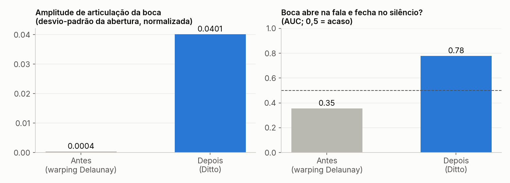
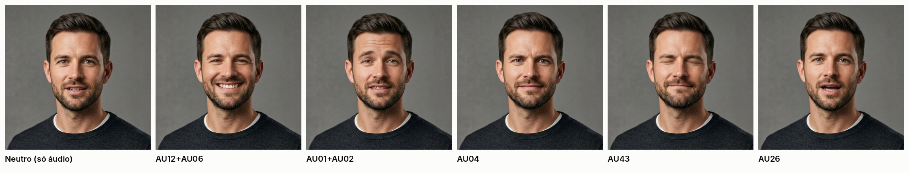
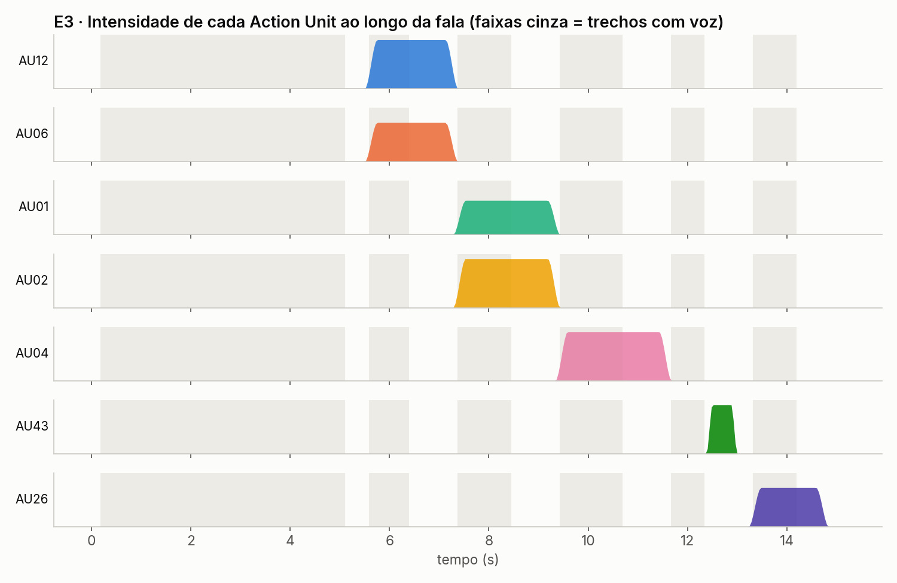
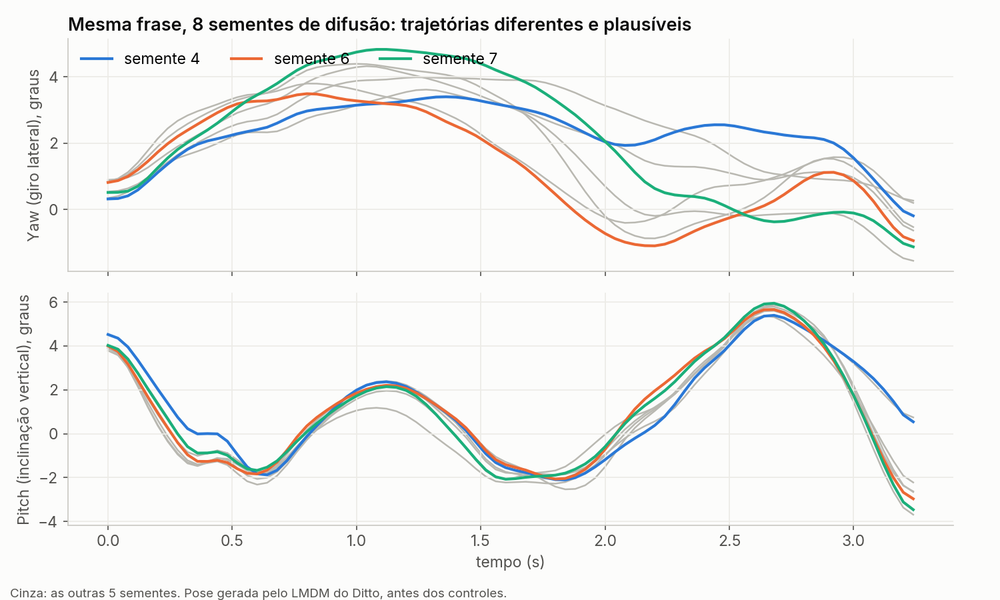

Laboratório Trilha D v2: avatar foto-realista que fala
Os seis testes das sementes de pesquisa refeitos com um talking head neural de verdade: o Ditto (Ant Group, ACM MM 2025), que faz difusão no espaço de movimento do LivePortrait. Os controles da Trilha D (InstructParser, Action Units, pose, plano do Sistema 2) entram como condicionamento. Foto única de 1024×1024, voz Piper pt-BR e renderização inteira em CPU.
Antes × depois: o mesmo áudio, a mesma foto
O renderizador antigo deformava a foto com uma malha Delaunay de cerca de 45 pontos fixos. A boca abria só 3 a 5 px. O novo prevê movimento de keypoints 3D implícitos a partir do áudio e sintetiza os pixels com uma rede de warping 3D e um decoder.

Áudio → dinâmica facial holística
Igual ao VASA-1: um modelo de difusão gera, num espaço latente que separa identidade de pose e expressão, a trajetória de lábios, olhar, piscadas e cabeça condicionada na voz (features HuBERT). Nenhum controle manual.
LMDM (difusão, 50 passos DDIM)HuBERTwarping 3D + SPADEMesma voz, instruções de texto diferentes
O InstructParser da Trilha D lê a instrução e devolve pesos de emoção, intensidade e viés de cabeça. Isso vira: (1) o rótulo de emoção de 8 classes do Ditto, (2) um perfil de Action Units a partir dos protótipos EMFACS e (3) deslocamentos de yaw e pitch. O lip-sync continua vindo do áudio.
Controle anatômico por Action Units (FACS)
Cada AU vira um deslocamento dos 21 keypoints implícitos 3D (au_to_delta_exp), somado ao que a difusão gerou. A boca continua sincronizada com a fala.


Conversa: falar e escutar
Em diálogo, o avatar também precisa reagir enquanto o outro fala. Durante o turno do interlocutor, a Trilha D detecta os picos de ênfase da voz dele e gera acenos de backchannel (cerca de 0,3 s cada), um sorriso leve e um pequeno giro em direção ao interlocutor. Depois o avatar retoma a fala com emoção positiva.
Sistema 1 (reflexo) × Sistema 1 + Sistema 2 (deliberação)
Esquerda: só o reflexo acústico. Direita: o mesmo reflexo mais um plano semântico escrito por um LLM (Claude) a partir da transcrição, no papel do MLLM do OmniHuman-1.5. Ele olha para cima ao "pensar", acena em "a melhor parte", inclina a cabeça e franze as sobrancelhas em "sinceramente", balança a cabeça em "falta bastante" e sorri no fechamento. Os dois lados usam a mesma semente de difusão.
O problema 1-para-muitos

O pitch fica preso à prosódia (as 8 curvas quase coincidem). O yaw é livre: cada semente escolhe um caminho. Uma regressão L2 colapsaria para a média dessas curvas.
Medidas objetivas (MediaPipe FaceMesh)
| Vídeo | Amplitude da boca (dp) | AUC fala/silêncio | Boca fala/silêncio | Mov. cabeça (px) | Piscadas/min |
|---|---|---|---|---|---|
| Antes: vasa1_avatar_realista.mp4 (8 s) | 0.0004 | 0.35 | 0.80× | 1.4 | 0 |
| Depois: Ditto, mesmo áudio (8 s) | 0.0401 | 0.78 | 5.14× | 3.5 | 8 |
| Depois: E1 com voz nova (12 s) | 0.0377 | 0.62 | 1.51× | 2.7 | 10 |
| Antes: meu_teste_avatar_realista.mp4 | 0.0005 | 0.06 | 0.47× | 0.9 | 0 |
Amplitude = desvio-padrão da abertura dos lábios internos normalizada pela distância entre os olhos. AUC fala/silêncio: probabilidade de a boca estar mais aberta num frame com voz do que num frame de silêncio (0,5 = acaso). Métrica-proxy: não substitui SyncNet/LSE, cujos pesos não estavam acessíveis aqui.
Código em foto_realista_v2/ (ditto_lab.py, experiments.py, compose.py, metrics.py) com README e patches para rodar o Ditto sem GPU NVIDIA. As trajetórias de movimento (.npz) de cada experimento estão em foto_realista_v2/runs/, prontas para exportar às Trilhas B e C.